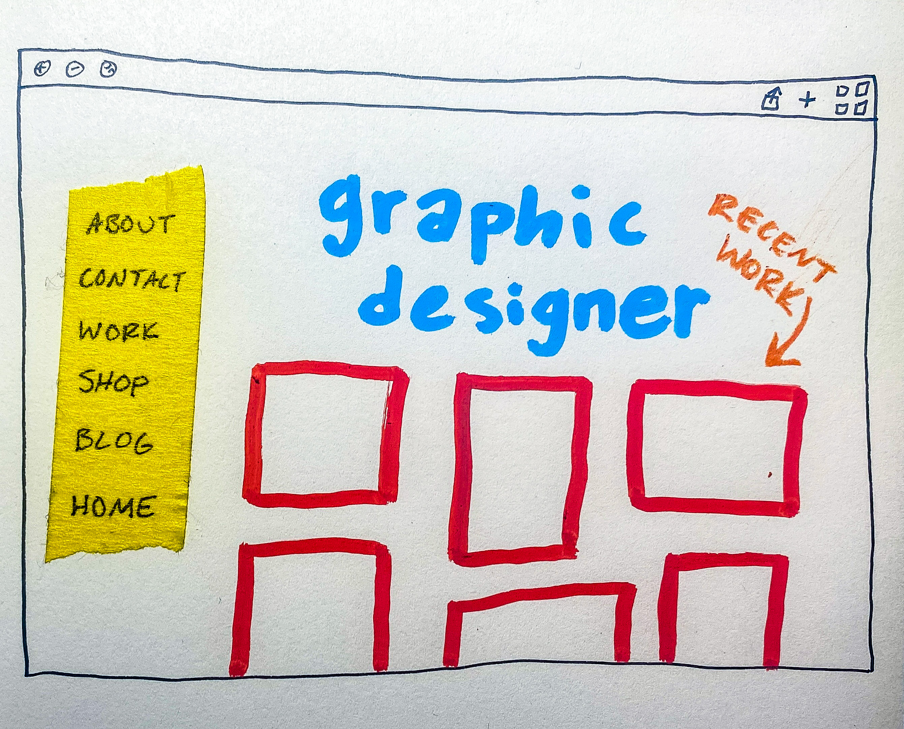
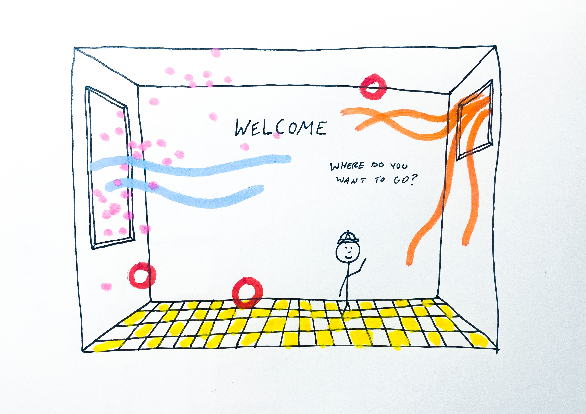
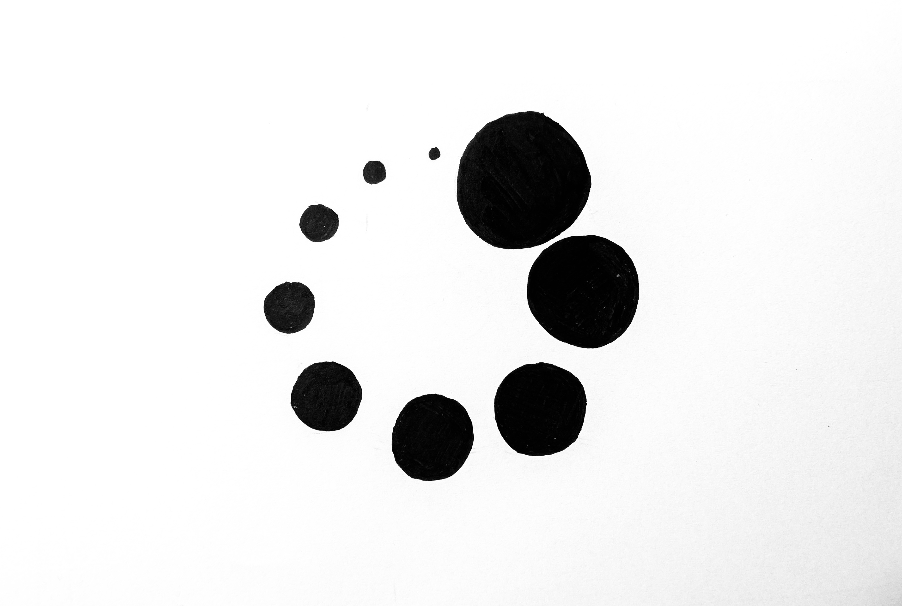
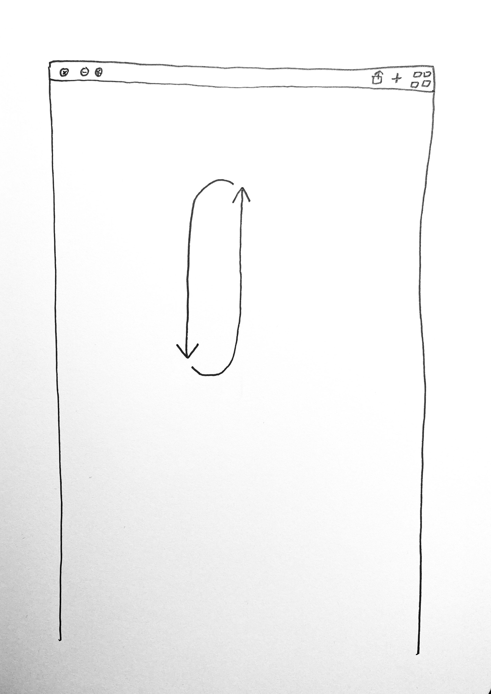

READING RESPONSES
HOME
RESPONSE 1

J.R. Carpenter Handmade Web
A website that has an aesthetic of being made with physical tools or elements.
Hand drawn elements and things pieced together with the appearance of paper cut out and glued.
Examples would include Yoshi’s Crafted World video game that has a very handmade look to it with lots of texture and 3D perspectives.
Sketch is of the homepage of a portfolio website that has handmade elements crafted and collaged to build the page.
RESPONSE 2

Laurel Schwulst
A website is a living space.
A website that is just a room, a place to settle.
A 3D interactive space that you can turn to change perspectives.
Elements are floating within the room.
RESPONSE 3

A Friend Is Writing
A webpage to a website tha never loads.
All that appears is a giant infinitely spining loading symbol.
RESPONSE 4

Frank Chimero: The Web's Grain
An endless website.
As you scroll, it loops you back to the start of the webpage seemlessly without the user realizing.